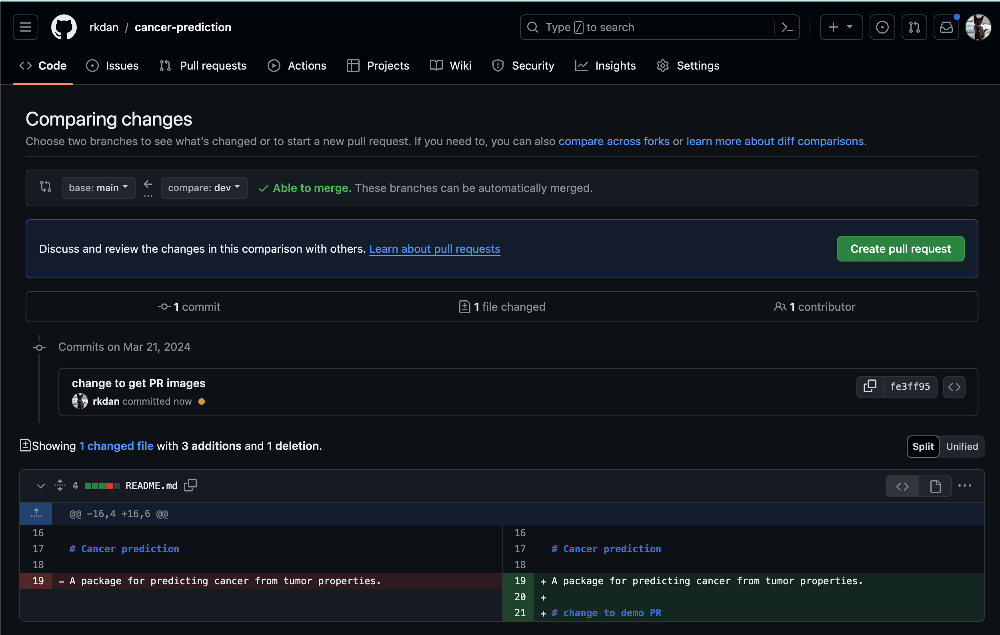
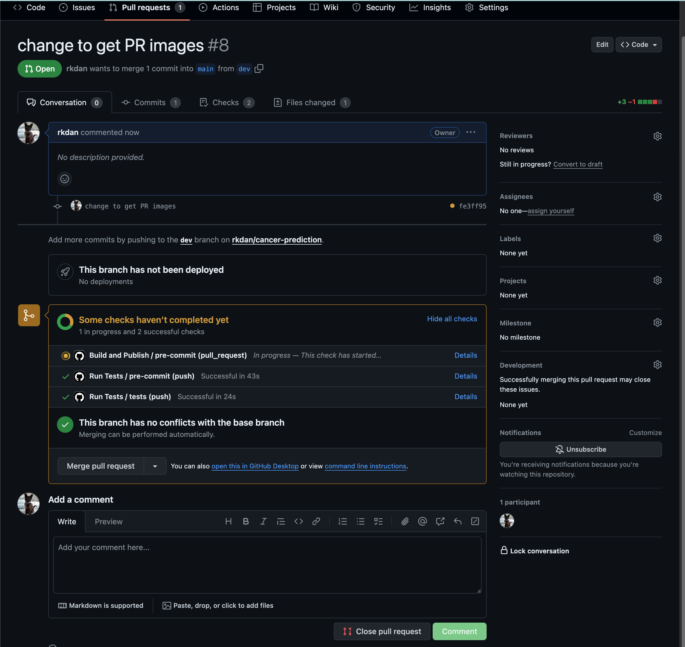

Publishing
Finally, we will automate the publishing of our package to PyPI and the release of the documentation.
Pull requests
When do we want to publish our package and documentation? We don't want to publish when we push changes to dev, because there might be some experimental changes that we've made that could break our package. Instead we should restrict publishing only when there are pushes made to main. However, we don't just want to push changes to main directly.
Head over to the repo and submit a pull request. It should look something like this:

You should make sure that the compare branch is dev and the base branch is main.
Warning
If you are working on a fork, you should be comparing your forked repo with your forked repo base, not your forked repo with the upstream repo base.
There are no conflicts so I can merge these branches without any issues. If there are conflicts you must manually go through them and decide whether you want to keep the base changes or the compare changes. Hit Create pull request and give it a title and description, and hit Create pull request again. You should come through to a page that looks somewhat like the image below.

Notice that there are some checks happening. We want to avoid hitting that Merge pull request button as long as those checks have not passed. We can actually enforce this, but for now we can just manually make sure that the checks have passed.
Now head over to the Code tab and click on the branches. Delete the dev branch. We don't need it anymore. When you head back into codespaces, checkout the main branch and pull any changes by running these commands:
git checkout main
git pull origin main
We will create a new branch for adding our publishing workflow:
git checkout -b build-and-publish
The workflow
To demonstrate the process, create a new workflow called build-and-publish.yml. It looks like this:
name: build-and-publish
on:
push:
tags:
- 'v*'
jobs:
release:
runs-on: ubuntu-latest
steps:
- uses: actions/checkout@v4
with:
fetch-depth: 0
- name: Verify tag is on main
run: |
BRANCH=$(git branch -r --contains ${{ github.ref }} | grep 'main' || true)
if [ -z "$BRANCH" ]; then
echo "Error: Tag must be created on main branch"
exit 1
fi
- name: Install uv
run: curl -LsSf https://astral.sh/uv/install.sh | sh
- name: Set up Python
uses: actions/setup-python@v5
with:
python-version: '3.12'
cache: 'uv'
- name: Install dependencies
run: uv sync
- name: Build package
run: uv build
- name: Get version from tag
id: get_version
run: echo "version=${GITHUB_REF#refs/tags/v}" >> $GITHUB_OUTPUT
- name: Create Release
uses: actions/create-release@v1
env:
GITHUB_TOKEN: ${{ secrets.GITHUB_TOKEN }}
with:
tag_name: ${{ github.ref }}
release_name: Release ${{ steps.get_version.outputs.version }}
body: Release ${{ steps.get_version.outputs.version }}
draft: false
prerelease: false
- name: Publish to TestPyPI
run: |
uv publish --publish-url https://test.pypi.org/legacy/ \
--username __token__ \
--password ${{ secrets.TEST_PYPI_API_TOKEN }}
This is a bit longer than the one we did for only testing! Let's have a look at what is going on.
Run conditions
name: build-and-publish
on:
push:
tags:
- 'v*'
tag condition. This is saying that the workflow will only run when a tag is pushed to the repo. The tag must start with a v. This is a common convention for versioning software. For example, if you want to release version 1.0.0, you would tag it with v1.0.0.
The Release Job
The main job here is the release. We look at some key components
- name: Verify tag is on main
run: |
# Get the branch containing this tag
BRANCH=$(git branch -r --contains ${{ github.ref }} | grep 'main' || true)
# Check if the tag is on main
if [ -z "$BRANCH" ]; then
echo "Error: Tag must be created on main branch"
exit 1
fi
This does exactly what you think it does! It checks if the tag is on the main branch. If it is not, it will throw an error and the workflow will stop.
The next interesting part is
- name: Get version from tag
id: get_version
run: echo "version=${GITHUB_REF#refs/tags/v}" >> $GITHUB_OUTPUT
This is responsible for finding out the version of our package. The type of changes you make will depend on which number in the version gets changed according to standard semantic versioning rules. The idea of semantic versioning is to use 3-part version numbers, major.minor.patch, where the project author increments:
- major when they make incompatible API changes,
- minor when they add functionality in a backwards-compatible manner, and
- patch, when they make backwards-compatible bug fixes.
We then allow the GitHub bot to alter the version in the pyproject.toml file, and commit and push the changes. Obviously this push does not trigger the workflow again, otherwise that would result in an endless loop. In order for this to work, you need to give the GitHub Bot permission to write to your repo. Head to Settings -> Actions -> General. Look for Workflow permissions, and click Read and write permissions, and save.
- name: Create Release
uses: actions/create-release@v1
env:
GITHUB_TOKEN: ${{ secrets.GITHUB_TOKEN }}
with:
tag_name: ${{ github.ref }}
release_name: Release ${{ steps.get_version.outputs.version }}
body: Release ${{ steps.get_version.outputs.version }}
draft: false
prerelease: false
- name: Publish to TestPyPI
run: |
uv publish --publish-url https://test.pypi.org/legacy/ \
--username __token__ \
--password ${{ secrets.TEST_PYPI_API_TOKEN }}
The final section builds the package and releases it to GitHub and to Test PyPI. In order for this to work, you have to give GitHub your API key. Head to the repo Settings -> Secrets and variables -> Actions. Add a new repository secret and call it TEST_PYPI_API_TOKEN. You will need to paste in your API token from Test PyPI, which you have hopefully kept in your .env file.

Different approaches to Git management
There are two main schools of development on git: Git Flow, and trunk-based development.
Git Flow
In Git Flow you have two long-running branches main and dev. Workers will usually branch off of dev, make some feature change, then submit a PR. The PR is accepted (or not) and merged to dev. When we are happy, we create a release branch, do some tests, and then merge this branch into main and tag it with a release. This style is very suitable to open-source projects, where you can't trust random people trying to make changes to your code.
Trunk
In Trunk-based development, you work from a single main branch. Usually you work from it directly, and make short changes, and make small feature branches. Development is fast and continuous. When you are happy, you create a separate release branch which is pushed to PyPI (or wherever). This is a great option for small, speedy projects, and is the approach that we use here.
Tip
If you find yourself working on a feature, and somebody has made changes to the main branch, you can update yours by running
git checkout dev
git merge origin/main
dev branch with the changes from main.
Actually publishing
Submit a PR, and merge the changes into main. If we've done everything correct, the workflow should not run.
Back in Codespaces, checkout the main branch and pull any changes:
git checkout main
git pull origin main
Bump the version (because if we try to push this versoin again, it will fail), and push the changes:
uv version patch
git add pyproject.toml
git commit -m "Bump version to $(uv version --short)"
git push origin main
Now, create a new tag and push it:
git tag v$(uv version --short)
git push origin v$(uv version --short)
Now when we head back to the repo, we should see the workflow running. If it fails, you can check the logs to see what went wrong. If it passes, you can check the releases tab and see your new release! And you can also head to Test PyPI and see your package there too!
Further reading
-
Information on collaborating in GitHub, and different types of development